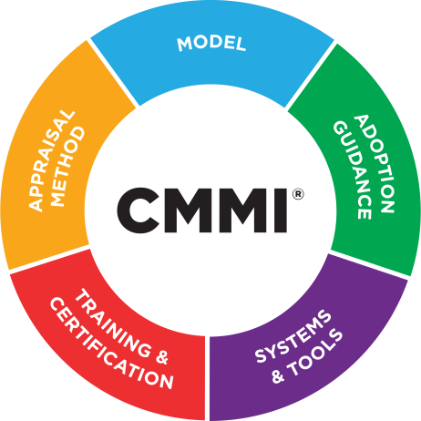

CEO & COO
Seniors and Team Leaders
Information Security Manager
IS manager do not fix/develop fixing!
IS manager referring to an organization procedures and policies.
Not the security team determine the amount of security to spend on service re resource.
Data owner + Data custodians
Data owner
Data Owners are responsible for making decisions on how data is accessed, edited, and used within an organization. They classify the risks associated with their data and often determine appropriate trade-offs for security. Data Owners play a crucial role in ensuring the confidentiality, integrity, and availability of data assets. They are accountable for defining and enforcing data governance policies and procedures.
Data Custodians
Data Custodians are responsible for the day-to-day maintenance and configuration of security controls to protect data assets. They are also involved in the development and implementation of security measures in accordance with organizational policies and standards. Data Custodians work closely with Data Owners to ensure that the security controls are aligned with the identified risks and requirements. They are often referred to as security professionals or security administrators.
Principles Of Corporate Governance
Fairness
Accountability
Transparency
Responsibility

CMMI (Capability Maturity Model Integration)
The CMMI model is a process improvement approach that provides organizations with guidelines to enhance their ability to develop and maintain quality products and services. Key aspects of the CMMI model include:
- Process Areas: The CMMI model defines a set of process areas that cover different aspects of the organization's processes, such as project management, requirements management, configuration management, and more.
- Maturity Levels: The CMMI model defines five maturity levels that represent different levels of process capability and maturity. These levels range from Initial (Level 1) to Optimizing (Level 5).
- Process Improvement: The CMMI model helps organizations identify areas for improvement and provides a framework for implementing best practices and process improvements.
- Appraisals: Organizations can undergo appraisals to assess their process maturity and capability against the CMMI model. This helps in identifying strengths and areas for improvement.
- Continuous Improvement: The CMMI model promotes a culture of continuous improvement by providing a structured approach to assess, plan, and implement process improvements.